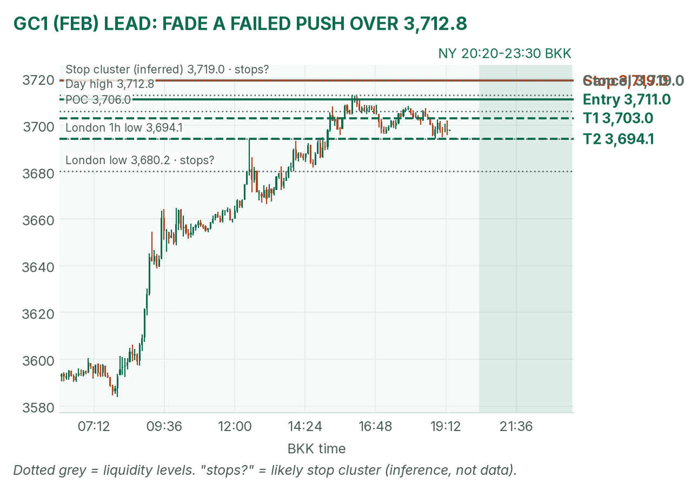
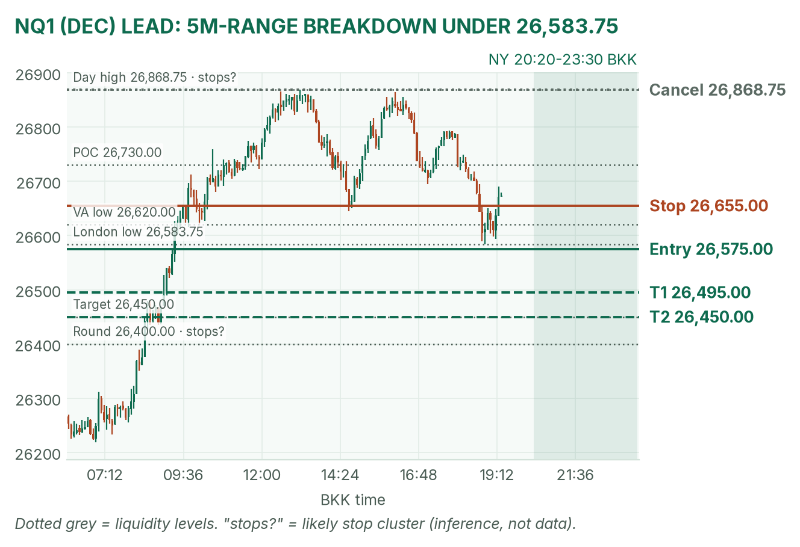

Holiday half-day after a big rebound: fade gold's high, short Nasdaq only if it cracks.
Window 20:20–23:30 BKK. Cut 19:20 BKK (TopstepX, completed 1-minute bars; GC is the February contract, NQ December). Levels only, flat by 23:30. Ideas, not advice.
Summary
Risk first: thin holiday trading, US trade data at 20:30 and a half-day stock open at 21:30.
GC: sell a failed push over 3,712.8 back toward 3,694. About 32%.
NQ: short a 5-minute-range breakdown under 26,583.75. About 38%.
The market story
Gold and Nasdaq bounced hard after Thanksgiving, but a 98.8%-priced December Fed hike and rising yields cap both (April). Nasdaq already faded 285 points from its high. Thin volume overshoots, so trade failures at the edges, not chases.
Stops likely cluster above 3,712.8 (inference). This morning's London fade was stopped, so wait for the failure. April partly agrees.

GC 5-minute bars to 19:20.
Scenarios to watch
Bullish: a 5-minute close above 3,719 aims for 3,738.
Mean reversion: a flush under 3,694.1 that reclaims it aims back to the 3,706 POC.
Nasdaq (NQ1)
Rule: trade breakouts of the 21:30–21:35 range. Expected range 26,406–26,942 (4 sessions).
Entry
Sell 26,575 after 21:35, if the 5-minute range breaks down
Stop
26,655, above value-area low 26,620
Targets
1R partial 26,495 · full 26,450 (1.56R)
Cancel
26,868.75 trades first
Probability
~38%, estimate: 5-minute breakouts +0.37R in our 31-trade study, not significant.
After 21:45, stay short only below VWAP (average traded price). April partly agrees.

NQ 5-minute bars to 19:20.
Scenarios to watch
Bullish: a close above 26,868.75 aims for 26,940.
Mean reversion: a range inside 26,620–26,850 returns to the 26,730 POC.
6E: 1.0968 (April, 18:25), soft on European inflation.